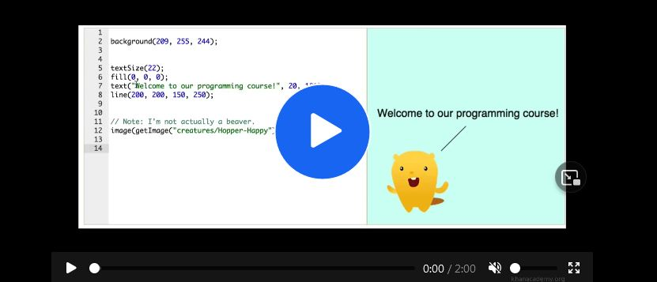

Programming languages
common Programming languages
Unfortunately, computers don’t understand languages like English or Spanish, so we have to use a programming language they understand to give them instructions. There are many different programming languages, all of which have their own merits, and certain languages are better suited to particular types of tasks, but there is no one language that is the ‘best’.
